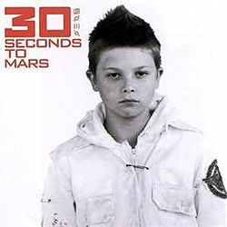
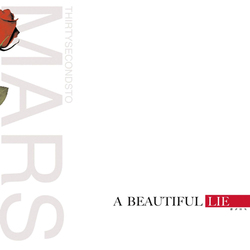
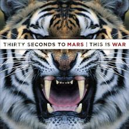
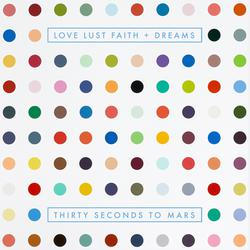
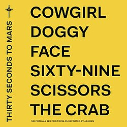

Історія
Гурт 30 Seconds to Mars був заснований у 1998 році відомим голлівудським актором Джаредом Лето та його старшим братом Шенноном Лето. У 1999 році Virgin Records уклала контракт з гуртом.
2001-2003: Дебютний альбом
У дебютному альбомі, що вийшов у 2002 році, брати Лето зіграли практично на всіх інструментах: вокаліст Джаред — на гітарі, бас-гітарі, синтезаторі; Шеннон — на ударних. У пісні «The Mission» на фортепіано зіграв продюсер альбому Боб Езрін (Bob Ezrin). Пізніше дует розширився до чотирьох учасників, додавши до складу гітариста Солона Бікслера та басиста Метта Вохтера. Додатковий гітарист Кевін Дрейк, який спочатку прослуховувався на посаду басиста, також приєднався до групи як гастрольний музикант. Альбом 30 Seconds to Mars розійшовся тиражем у 100 тисяч екземплярів. Синглами з альбому вийшли «Capricorn (A Brand New Name)» та «Edge of the Earth»: другий з них піднявся до 31-го місця у переліку U.S. Mainstream Rock. У жовтні 2002 року група гастролювала з I Mother Earth і Billy Talent на MTV Campus Invasion. Наступного місяця Thirty Seconds to Mars вперше з'явилися на телебаченні в шоу Last Call з Карсоном Дейлі та відкрили концерти для Our Lady Peace і Sevendust. Випущений у 2003 році «Edge of the Earth» став другим синглом з альбому. На початку 2003 року Бікслер покинув групу через проблеми, пов'язані в основному з гастролями. Пізніше його замінив Томо Миличевич, який успішно пройшов прослуховування на роль гітариста. Пізніше група вирушила в тур із Chevelle, Trust Company та Pacifier, а також взяла участь у турі Lollapalooza 2003 року.
2004-2008: A Beautiful Lie
Thirty Seconds to Mars повернулися до студії в березні 2004 року, щоб розпочати роботу над своїм другим альбомом A Beautiful Lie, продюсером якого став Джош Абрахам. Альбом вийшов 30 серпня 2005 року в США. У січні 2006 року він отримав платиновий статус. Головний сингл альбому «Attack» дебютував на радіо 6 червня 2005 року і став найпопулярнішим треком на американському сучасному рок-радіо протягом першого тижня після випуску. У 2005 році Thirty Seconds to Mars вирушили в тур із Chevelle, Audioslave та The Used. Гурт вирушив у свій перший тур Forever Night, Never Day у березні 2006 року. Водночас гурт випустив другий сингл з альбому "The Kill", який став найтривалішим хітом в історії Чарт сучасного року США, коли він залишався в національному чарті понад 50 тижнів. 31 серпня 2006 року 30 Seconds to Mars отримали MTV2 Award за кліп на пісню «The Kill». Гурт також був номінований у категорії «Best Rock Video». У березні 2006 року гурт вперше виступив хедлайнером у рамках Forever Night Never Day Tour, після котрого провів тур Taste of Chaos із такими гуртами, як The Used, Senses Fail, Saosin, Chiodos, Aiden і Evaline. У жовтні 2006 року гурт розпочав свій тур «Welcome to the Universe Tour», спонсорований MTV2, за підтримки Head Automatica, The Receive End of Sirens, Cobra Starship та кількох інших груп, включаючи Street Drum Corps. Третій сингл з альбому "From Yesterday" був випущений у листопаді 2006 року і став номером один у Billboard's Modern Rock Tracks. 20 листопада на MTV2 пройшла прем'єра «From Yesterday» — першого американського рок-кліпу, що зняли у Китайській Народній Республіці.
2008-2011: This Is War

Thirty Seconds to Mars розпочали запис свого третього студійного альбому This Is War у серпні 2008 року. У 2009 році Thirty Seconds to Mars підписали контракт зі звукозаписною компанією EMI. Хоча дата випуску змінювалася багато разів, This Is War зрештою був випущений у грудні 2009 року. Альбом увійшов до першої десятки кількох національних альбомних чартів і увійшов до Billboard 200 під номером 18 з продажем 67 000 копій за перший тиждень у США. Його перші два сингли, «Kings and Queens» та «This Is War», посіли перше місце в чарті альтернативних пісень США. Після промо-туру взимку 2009 року Thirty Seconds to Mars вирушили до свого туру Into the Wild у лютому 2010 року.
30 Seconds to Mars виступили в Києві 12 грудня 2010 в Палаці Спорту.
На церемонії вручення нагород MTV Video Music Awards 2010 «Kings and Queens» отримали чотири номінації, у тому числі «Відео року» та «Найкраща режисура», а також виграли «Найкраще рок-відео». Третій сингл з альбому «Closer to the Edge» став рок-синглом, що найбільше продається 2010 року в Сполученому Королівстві та вісім тижнів поспіль очолював британський рок-чарт. Thirty Seconds to Mars співпрацювали з репером Каньє Вестом над піснею «Hurricane».
16 жовтня 2011 року було оголошено, що гурт увійде до Книги рекордів Гіннеса за кількістю живих виступів протягом циклу одного альбому, зігравши 300 концертів. 300-е шоу під назвою Tribus Centum Numerarae відбулося 7 грудня 2011 року в бальному залі Hammerstein у Нью-Йорку, після чого була спеціальна серія шоу, яка ознаменувала кінець туру Into the Wild.
2012-2015: Love, Lust, Faith and Dreams

Thirty Seconds to Mars взяли перерву у турне у 2012 році і провели більшу частину року, записуючи свій четвертий альбом під назвою Love, Lust, Faith and Dreams.
У лютому 2013 року було оголошено, що «Up in the Air» стане першим синглом з четвертого альбому. Пісня посіла третє місце у чарті альтернативних пісень США та мала успіх на міжнародних ринках. Thirty Seconds to Mars випустили новий альбом 21 травня 2013 року на лейблі Universal у США. Альбом отримав загалом позитивні відгуки і увійшов до десятки найкращих у більш ніж п'ятнадцяти країнах, включаючи Велику Британію та США. Група розпочала свій тур Love, Lust, Faith and Dreams Tour у червні, який включав концерти на фестивалях у Rock Werchter, Pinkpop, Rock in Rio та Rock am Ring. На церемонії вручення нагород MTV Video Music Awards 2013, що відбулася 25 серпня, «Up in the Air» отримав нагороду за найкраще рок-відео.
12 березня 2014 року гурт знову завітав до Києва. Концерт мав відбутись у клубі Stereo Plaza, але завдяки численним проханням фанатів майданчик було змінено на Палац Спорту. У серпні 2014 року гурт вирушив у тур, що отримав назву Carnivores Tour, з американським рок-гуртом Linkin Park відвідавши арени та стадіони по всій Північній Америці.
2015-2021: America

У листопаді 2015 року було оголошено, що Thirty Seconds to Mars працюють над своїм п'ятим студійним альбомом.
У серпні 2016 року стало відомо, що група підписала контракт із Interscope Records. Пізніше гурт оголосив, що вирушить у тур Північною Америкою з Muse та PVRIS, який пройде з травня по вересень 2017 року.
У серпні 2017 року «Walk on Water» був оголошений головним синглом з п'ятого альбому гурту.
25 січня 2018 року Thirty Seconds to Mars випустили «Dangerous Night» як другий сингл зі свого майбутнього п'ятого студійного альбому. У лютому 2018 року гурт офіційно оголосив про турне Monolith Tour за участю Walk the Moon, Misterwives, K. Flay, Joywave та Welshly Arms. Пізніше Thirty Seconds to Mars підтвердили назву свого п'ятого альбому «America», випущеного 6 квітня 2018 року. Альбом отримав неоднозначні відгуки критиків і дебютував під номером два в Billboard 200. Під час першого етапу туру Monolith Tour було оголошено, що Миличевич візьме перерву у гастролях з особистих причин. 11 червня 2018 року він офіційно оголосив про свій вихід з групи.
У 2019 році виступали на UPark Festival.
2021–2023: It's the End of the World but It's a Beautiful Day
27 серпня 2022 року Thirty Seconds to Mars анонсували ювілейну версію свого дебютного альбому, присвячену 20-річчю.
22 лютого 2023 року було оголошено, що 22 жовтня 2023 року гурт виступить на When We Were Young. 8 травня 2023 року Thirty Seconds to Mars випустили «Stuck», головний сингл з майбутнього шостого студійного альбому It's the End of the World but It's a Beautiful Day, який вийде 15 вересня.
Ешелон
Важливу роль у житті гурту відіграє Echelon: громадський рух, який допомагає в організації концертів, подає запити на радіостанції про транслювання пісень гурту, роздає постери, підтримує журнали та вебсайти, що присвячені гурту. «Ешелон» є частиною Mars Army (куди входять прихильники гурту у різних країнах світу).
Склад
Основний склад
- Джаред Лето — вокал, ритм-гітара, клавішні (іноді соло-гітара і бас-гітара)
- Шеннон Лето — ударні
- Томо Миличевич — соло-гітара, скрипка, клавішні
Дискографія
Альбоми
- 30 Seconds to Mars (2002)
- A Beautiful Lie (2005)
- This Is War (2009)
- Love, Lust, Faith and Dreams (2013)
- America (2018)
- It's the End of the World but It's a Beautiful Day (2023)
Сингли
- Capricorn (A Brand New Name) (2002)
- Edge of the Earth (2003)
- Attack (2005)
- The Kill (2006)
- From Yesterday (2006)
- A Beautiful Lie (2007)
- Kings and Queens (2009)
- This Is War (2010)
- Closer to the Edge (2010)
- Hurricane (2010)
- Up In The Air (2013)
- Do Or Die (2013)
- Walk On Water (2017)
Відеокліпи
- Capricorn (A Brand New Name) (06.08.2002)
- Edge of the Earth (22.03.2003)
- Attack (01.09.2005)
- The Kill (05.05.2006)
- From Yesterday (04.12.2006)
- A Beautiful Lie (29.01.2008)
- A Beautiful Lie 2.0 (16.09.2008)
- Kings and Queens (12.11.2009)
- Closer To The Edge (09.06.2010)
- Hurricane (30.11.2010)
- This is War (06.04.2011)
- Up In The Air (19.04.2013)
- Do or Die (05.08. 2013)
- City of Angels (29.10.2013)
- Walk On Water (8.11.2017)
- Rescue Me (12.06.2018)
- Stuck (8.05.2023)